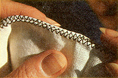
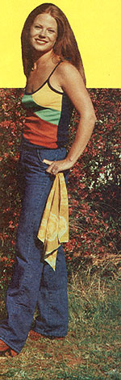

Try this practical, easy, moneysaving, sew-your-own project:
Let's face it: Not only are facial tissues ecologically and economically unsound, but they also have a way of going to pieces . . . when they're most needed. Have you, for example, ever tried to mop your gardening-besweated brow with disposable paper? I have . . . and decided then and there that it was time to get back to good, old-fashioned, durable pocket handkerchiefs!
I wasn't ready, however, to pay 75 cents for a tiny square of cotton! Especially when I knew I could make five or more "hankies" for that price . . . or possibly for nothing at all! Here's how:
Almost every sewing machine comes with a book of instructions and a number of complicated-looking attachments that many people never bother to master. The enterprising seamster or seamstress need not be fooled, however, because machine-stitching paraphernalia-for the most part-only appears complicated.
Let's examine just one of the gadgets usually found with zigzag, straight-stitch, and even treadle "sewers": the roll foot. (Its purpose is to curl over and then tack down edges of fabric to prevent fraying.) Admittedly, you'll have to practice before you get the hang of this handy device, but find some scraps of material and try it out . . . because a roll foot can help you turn out some really nifty "nose-blowers" in a very short period of time.
Once you've mastered the attachment (it won't take long!), look over your odds and ends of cloth and/or any old flour sacks you could recycle. (Nobody says handkerchiefs have to be made out of delicate white cotton or linen!) If your remnants don't look as if they'll do the job, go out and buy two yards of inexpensive 54" cotton fabric. You can cut 12 big handkerchiefs from that piece . . . each one will be about 18" X 18", minus the rolled hem (which takes about a tenth of an inch on each side).
And-when you already know the rollfoot technique-why stop with the big brow-moppers? You can produce colorful neckerchiefs and scarves in the same fashion . . . or even smaller, appropriately decorated hankies for your favorite child.
As another roll-foot project, take a look at your kitchen budget and note the hunk of money usually spent on paper products. You can take down the paper-towel rack permanently if you turn under the edges of highly absorbent cotton material to produce kitchen cleanup cloths. And why not be done with those tree-eating paper napkins? Make your own-plus tablecloths to match- from the fabric of your choice. You can also adorn bedrooms . . . with color-coordinated dresser scarves and curtains!
And don't forget that all the things you sew for yourself can be used as marvelously practical gifts for others as well. Wouldn't it be nice if-the next time your friends' noses produce great, tissues-hattering sneezes they could whip out their huge, homemade, fabric pocket handkerchiefs ... and (no doubt) bless you!
|
 |
|
 |